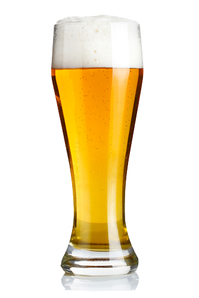

Novel
by Arthur Rimbaud
We aren't serious when we're seventeen.
—One fine evening, to hell with beer and lemonade,
Noisy cafés with their shining lamps!
We walk under the green linden trees of the park
The lindens smell good in the good June evenings!
At times the air is so scented that we close our eyes.
The wind laden with sounds—the town isn't far—
Has the smell of grapevines and beer . . .
—There you can see a very small patch
Of dark blue, framed by a little branch,
Pinned up by a naughty star, that melts
In gentle quivers, small and very white . . .
Night in June! Seventeen years old! —We are overcome by it all
The sap is champagne and goes to our head . . .
We talked a lot and feel a kiss on our lips
Trembling there like a small insect . . .

Our wild heart moves through novels like Robinson Crusoe,
—When, in the light of a pale street lamp,
A girl goes by attractive and charming
Under the shadow of her father's terrible collar . . .
And as she finds you incredibly naïve,
While clicking her little boots,
She turns abruptly and in a lively way . . .
—Then cavatinas die on your lips . . .
You are in love. Occupied until the month of August.
You are in love. —Your sonnets make Her laugh.
All your friends go off, you are ridiculous.
—Then one evening the girl you worship deigned to write to you . . . !
—That evening, . . . —you return to the bright cafés,
You ask for beer or lemonade . . .
—We're not serious when we are seventeen
And when we have green linden trees in the park.